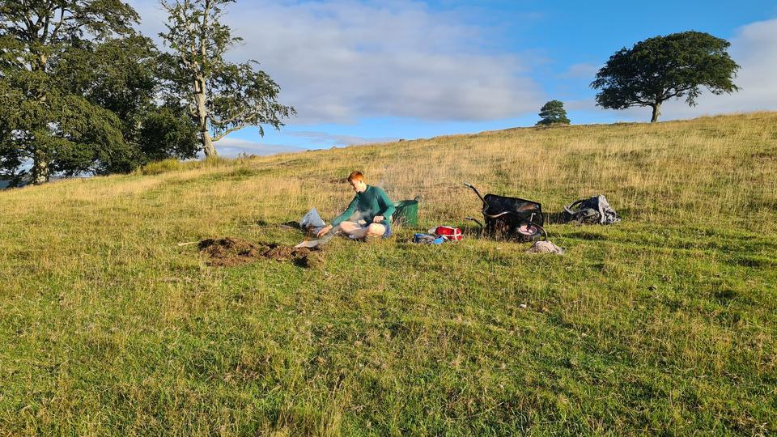
Big Reads
Sunrise, a field, and a man cooking alone: the 06:00 club
31 Aug 2026
Three ski stations, 2,620 metres of climbing, and a biscuit that very nearly ended it.
Quickler Weekly – the ride report, every Monday ↗Modern cycling has decided that the answer to everything is carbohydrate, and the fastest man on this ride will tell you it is right. Easy FO Bianchi put away three hundred and fifty grams of the stuff between Pitlochry and Aviemore, said his legs were good for a change, and gave the credit entirely to the eating. He was first up the Lecht and first up Cairngorm. His method was to eat like a horse for six hours.
I subscribed to the identical doctrine and administered it, violently and with Italian panache, in the form of a hobnob. There is a stretch of the A939 that has now had more of my breakfast on it than I have.
Between those positions lie a hundred and eighty-one kilometres, three ski stations, two thousand six hundred and twenty metres of climbing, five men who had each promised in writing to do no work, and a bus that does me no credit at all.
Nine were invited. Five came. A man’s excuse is the only wholly honest thing he produces all week.
Romeo Rider withdrew for a woman, having received a competing bicycle proposal from a party who were, he said, blonder than us. It is not a high bar and he knew it.
The New Father withdrew on account of a three-week-old daughter, the one unanswerable excuse in cycling, which I answered anyway on the grounds that if he did not come it would count as neglect. Ultra-Tree Planter had an ultra.
Sergio withdrew for his dog, left the chat at ten past five on the Friday, was resurrected at a quarter to seven when somebody agreed to mind the animal, wrote Im in, and chose in the end to stay wrapped in the blessed cocoon of the duvet. He spent Saturday in Dundee, texting to ask who had been first up the Lecht. There was a simple solution to this. Get out of bed.
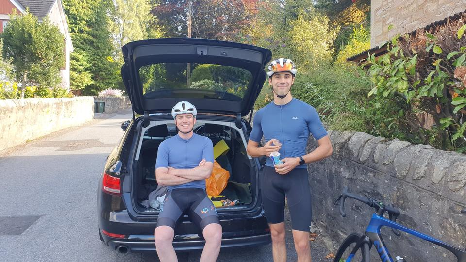
The ride began with a cautious climb into a smooth pace line on the glen floor. All was well and progress was good. Then the road curled up towards the Cairnwell and the civility dissolved like Gruppeto Davies’ pace. Five friends started the bottom of the climb. Five men rolled over the top.
Race? Can I wear aero socks?
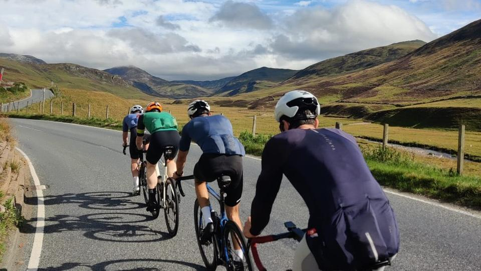
1 / 7Downhill off the Glenshee road, chasing campervans. Or just cruising behind them.
For two glorious hours and ten minutes the doctrine held. I ate, and ate, and dropped three grown men on a climb, which perplexed me, being up to forty-seven per cent heavier than one of them. I assumed I had found something. What I had found was the top of the arc.
Ten minutes later I put another hobnob down and spewed three times.
The chemistry, for those keeping notes. A hobnob is roughly sixty per cent carbohydrate and a fifth fat. Fat, on a gradient, at eighty-nine per cent of threshold, is luggage, and luggage has only the one way out. Every calorie I took that day was put to honest work except those locked in an oat biscuit built for a vicarage tea trolley.
The release was a vile lava of chocolate with a shotgun’s bird shot of oats. I had discovered a rapid weight-shedding technique of considerable promise. Could I monetise this?
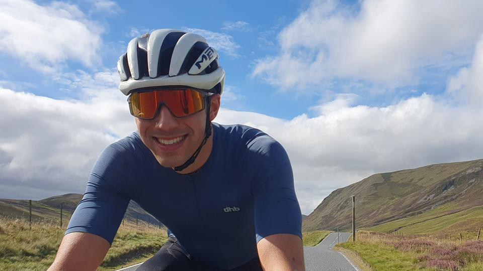
Behind us Gruppeto Davies was going backwards in a manner he described that evening as absolute burnt toast. He listed the affected regions. It was like reading about the Middle East. Hot spots everywhere you look, here, there and everywhere: legs, back, chest, neck, shooders. Undercarriage (an allegory for Afghanistan), he added, times four.
The cafe at Tomintoul is where the day came apart, though nobody noticed at the time. Mc54Tooth, the most honest man in the chat and possibly in Scotland, later explained that he had spent the climbing out of the red deliberately, assuming a group of friends would soft-pedal over Bridge of Brown and wait. We did not wait.
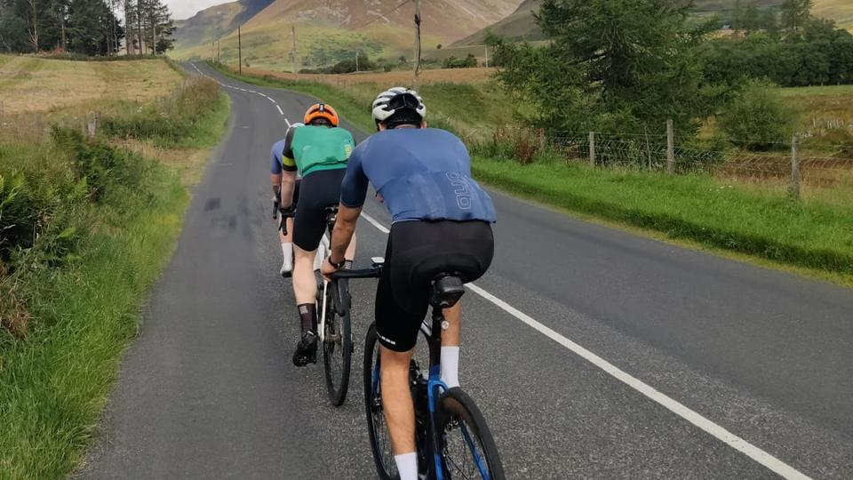
1 / 6Through Nethy Bridge and on to the mountain road, a hundred and sixty kilometres in the legs and the field down to three. Bed Doctor had been shelled at a hundred kilometres and again at a hundred and sixty, and was nonetheless still there, upright, pedalling. And strangely singing the Welsh national anthem.
Who topped the climbs first? The man who spends his week at FL36. He climbed like a TOGA departure out of London City. I climbed like an Antonov full of gold being posted to Iran from a runway with potholes.
Absolutely shagged. As a medical professional, that was the diagnosis of the Doctor. Such was his state of nutrition he was clearly beyond delirious, and by now singing Abba. Also in Welsh.
And then, about a man forty kilometres south of us and alone, the only verdict nobody disputed. Mc54Tooth is a machine. Even when dropped, the man continues to put out watts for a girl he met once and cannot afford to visit.
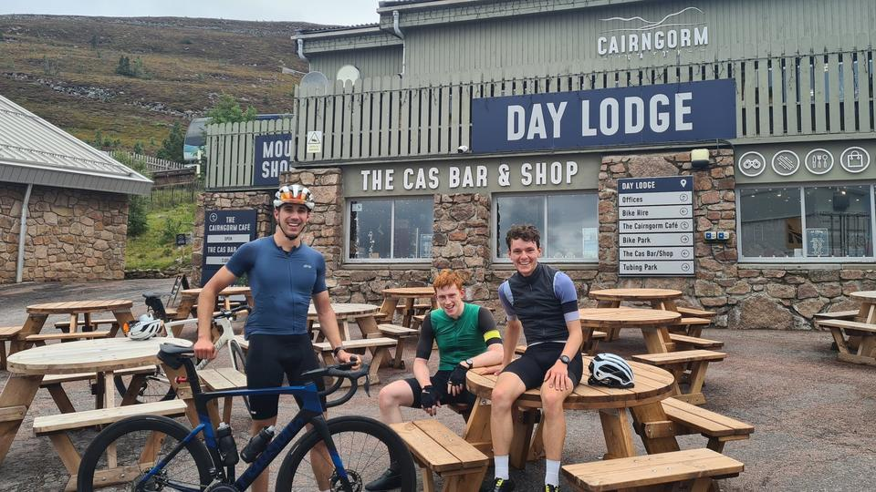
| Rider | His own title | Distance | Power | Verdict |
|---|---|---|---|---|
| Easy FO Bianchi | 3 Ski Stations | 112.4 mi | 244 W | First up both. Credits the carbohydrate. |
| Specialised Spew | Ski Roads | 112.6 mi | 250 W | Second up both. Sick three times. |
| Bed Doctor | Cairngorm Snow Passes | 112.4 mi | 243 W | Shelled at 100km, again at 160, still there. |
| Mc54Tooth | Very unofficial gorms road race | 152.3 mi | 227 W | Rode back to Pitlochry to save £18. Saw a train. |
| Gruppeto Davies | Absolute burnt toast | 95.6 mi | 247 W | Burnt toast. Undercarriage, times four. |
Easy FO Bianchi and I had a bus to catch, and Highland buses take two bicycles. That, and not any great show of strength, is why nobody waited at the top of anything. The timetable won by ten minutes.
Mc54Tooth rode a hundred kilometres alone down the A9 cycle path, having already crossed three ski stations, to save eighteen pounds on a train ticket. Making the cost per mile a fantastic deal.
Gruppeto Davies stayed the night in Aviemore. Enquiries are ongoing as to the result of his unsettled gut. Our thoughts and prayers are with the families of the victims. How those small hours treated him we surely cannot ask, lest we sleep the sleep that does not end.
Asked that evening what had kept him going, Mc54Tooth said this.
The train is kinda impressive too, it made me smile
He had passed a Tesco freight train on the A9 and photographed it. Such was the loneliness of Mc54Tooth on those moors that the sight of it brought joy of the order a Hornby with a realistic chuffing sound brought a child in the 1970s when the electricity came back on after the blackouts in Shropshire.
Photography: Specialised Spew, Easy FO Bianchi, Mc54Tooth and Gruppeto Davies
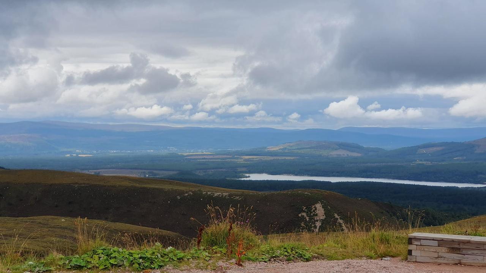

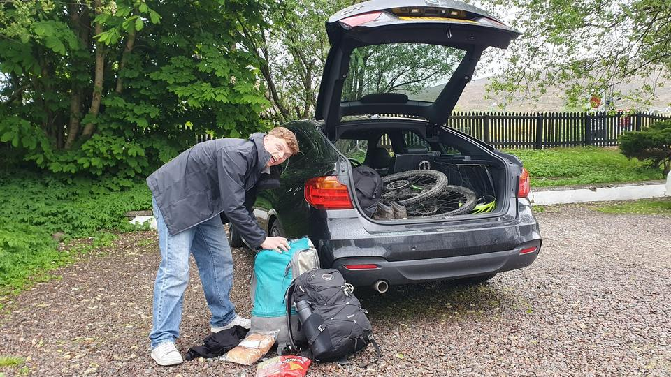
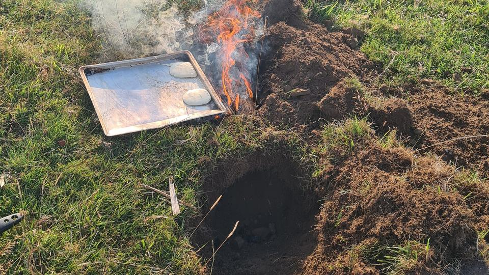
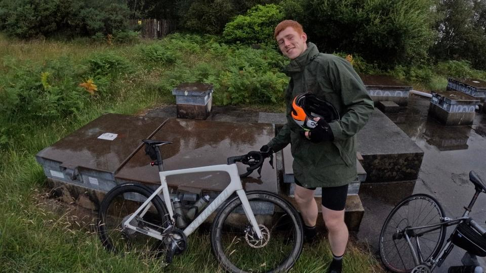
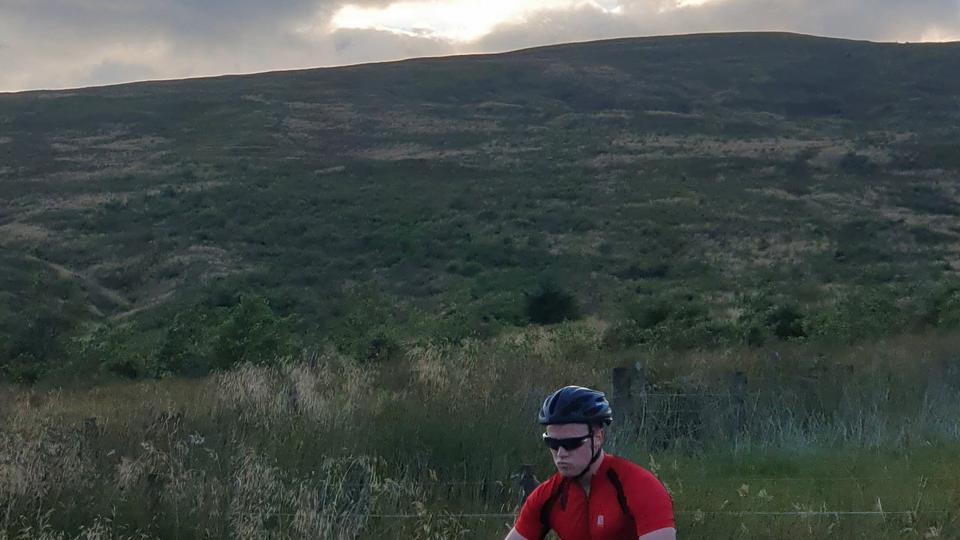